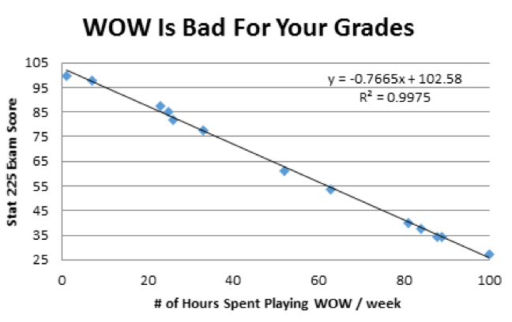
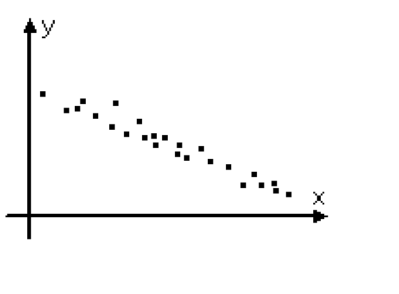

Introduction to Probability Models
Lecture 40
Qi Wang, Department of Statistics
Dec 3, 2018
Example 1
Drew wanted to prove to his friend Steve that World of Warcraft (WOW) was bad for his education. He collected data from friends in Stat 225 that play WOW. The plot below reflects his findings.

- What is the explanatory variable and what is the response variable?
- What is the slope of this line? What does this value mean in terms of the story?
- How much of the variation in the STAT 225 exam score is NOT explained by the linear relationship with the number of hours spent playing WOW per week?
- What is the value of the correlation between exam score and the number of hours per week spent playing the game?
- Suppose a student played WOW for 23 hours per week. What is his/her predicted STAT 225 Exam Score? Is this predicted value valid? Why or why not?
- If the number of hours playing WOW were to decrease by 2.5 hours per week, by how much would you expect the STAT 225 Exam Score to change?
Example 2
The following scatterplot was created from 2 quantitative variables, x and y. Choose the correct statement that relates to this figure.

- A. The correlation would be close to 0.
- B. $r^2 < 0$
- C. For each 1 unit increase in x, there is an expected increase in y
- D. For each 1 unit increase in x, there is an expected decrease in y.
- E. Cannot make any definitive statements without additional information